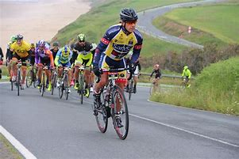
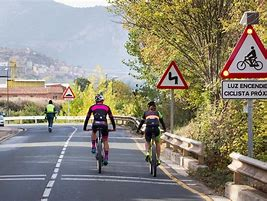

El ciclismo en ruta o ciclismo en carretera es una modalidad de ciclismo de competición que consiste en competir en carretera, a diferencia del ciclismo en pista que queda reducido al óvalo del velódromo u otras modalidades que no se disputan sobre asfalto. El ciclismo en ruta es un deporte muy exigente y no debe ser confundido con el cicloturismo, a pesar de que en él también se pueda dar cierto nivel de exigencia competitiva, pero se presupone que hay que ser totalmente autónomo sin asistencias al contrario que en el Ciclismo en Ruta que está todo mucho más controlado. Ciclismo en ruta El ciclismo en ruta suele tener lugar a partir de la primavera hasta el otoño en el hemisferio norte. Muchos ciclistas del hemisferio norte pasan el invierno en países como Australia y Argentina para competir o entrenar. La gama de carreras profesionales de la Unión Ciclista Internacional van desde las de tres semanas llamadas "Grandes Vueltas" (Tour de Francia, Giro de Italia y Vuelta a España) a las clásicas de un día. Sin embargo, el ciclismo en ruta también se da a modo aficionado (amateur) o amistoso de exhibición mediante diferentes pruebas como pueden ser los critérium.

La primera prueba ciclista de la historia a modo competitivo registrada se disputó el 31 de mayo de 1868 en un pequeño circuito de 1200 metros en el parque de Saint-Cloud, a las afueras de París, en la que participaron 7 ciclistas y fue ganada por el expatriado británico James Moore1 con una bicicleta de madera de piñón fijo y ruedas de hierro.2 Un año después se disputó la primera carrera propiamente dicha, concretamente el 7 de noviembre de 1869, entre París y Ruan. En ella participaron un centenar de ciclistas con el objetivo de culminar o ganar la prueba consistente en 123 km. Finalmente la lograron acabar 33. De nuevo británico James Moore ganó la prueba con un tiempo de 10 horas y 45 minutos. La intención de los organizadores fue demostrar que la bicicleta valía como medio de transporte para largas distancias.3 Primeras organizaciones ciclistas Las primeras asociaciones ciclistas se crearon en Florencia (Italia) el 15 de enero de 1870 y en Holanda en 1871 y posteriormente en Gran Bretaña y en España (Sociedad Velocipedista Madrileña y el Club Velocipédico de Cádiz) en 1878 pero fueron asociaciones humildes de pequeños clubs. La primera asociación nacional fue la francesa en 1881 que creó el primer campeonato francés de ciclismo.

En 1892 se creó la International Cycling Association (ICA) ('Asociación Internacional de Ciclistas') en Londres, creada por un profesor de inglés llamado Henry Sturmey, el fundador de Sturmey-Archer, siendo la primera asociación internacional de ciclismo, Se inauguró en 1893 y celebró su primer campeonato del mundo en Chicago, Estados Unidos, el mismo año. Pero divergencias entre los países que la formaban produjo que el 14 de abril de 1900 (durante los Juegos Olímpicos de París) se crease la Union Cycliste Internationale (UCI), ('Unión Ciclista Internacional') actual organismo rector, fundado en París. Los integraron las federaciones nacionales de Francia, Bélgica, Estados Unidos, Italia y Suiza.4 Gran Bretaña no fue inicialmente un miembro, pero se unió en 1903. En España el primer organismo ciclista nacional fue la Unión Velocipédica Española creada en 1895. Estas asociaciones se basaban prácticamente en el ciclismo en pista y ciclismo en ruta ya que apenas existían otras modalidades. Sin haber ningún tipo de especialización ya que los corredores disputaban indistintamente ambas disciplinas desde los 333 metros de pista hasta los más de 100 kilómetros de la ruta. Sin embargo, se puede decir que el ciclismo en pista cogió cierta ventaja al organizarse su primer mundial en 1895, contando con pruebas de velocidad y medio fondo, ya que al disputarse en un velódromo se podía controlar mejor aparte de poder cobrar entrada. JJ. OO., Monumentos, Grandes Vueltas y mundiales En 1896 se disputó la primera prueba en ruta de los Juegos Olímpicos consistiendo en un circuito de ida y vuelta entre Atenas y Maratón de unos 87 km. Mientras en el ciclismo en pista ya se disputaron 5 pruebas. Sin embargo, ya no se volvió a disputar olímpicamente la disciplina en ruta hasta 16 años después en los Juegos Olímpicos de Estocolmo 1912 donde se disputaron 2 pruebas en ruta por ninguna en pista, siendo la única vez que no se disputaron pruebas en pista debido al derribo del antiguo velódromo de Estocolmo. Entre 1890 y 1915 nacieron grandes pruebas de ciclismo en ruta, que con el paso de los años se han convertido en monumentos, algunas hoy todavía existentes.5 Pruebas en España y América En España las primeras pruebas estatales surgirían de un colectivo de fabricantes de bicicletas de Éibar durante la República. Desde 1932 a 1935 se celebró la Éibar-Madrid-Éibar en 4 etapas, antesala de la Vuelta a España. Si bien anteriormente ya se habían disputado carreras en pequeños clubs, siendo oficialmente los más antiguos la Volta a Tarragona (1908), Volta a Cataluña (1911) y Clásica de Ordizia (1922) debido a la influencia francesa al estar próximo a dicha frontera. En América la primera carrera registrada fue la Vuelta Ciclista del Uruguay cuya primera edición fue en 1939. Acotación de pruebas profesionales Debido a las numerosas pruebas que se iban creando se vio necesario crear unos límites de kilometraje y duración en ellas para una mejor organización. Así muchas de las carreras superiores a los 300 km dejaron de ser profesionales (la París-Brest-París en 1951). Mientras otras se ajustaron a dichos límites que cada vez fueron más estrictos. También se abolieron categorías semiprofesionales ambiguas, como la Independiente, que eran corredores sin equipo que aprovechaban ese status para participar en carreras profesionales que permitiesen ese tipo de corredores. Que posteriormente fueron considerados como amateurs (aficionados).